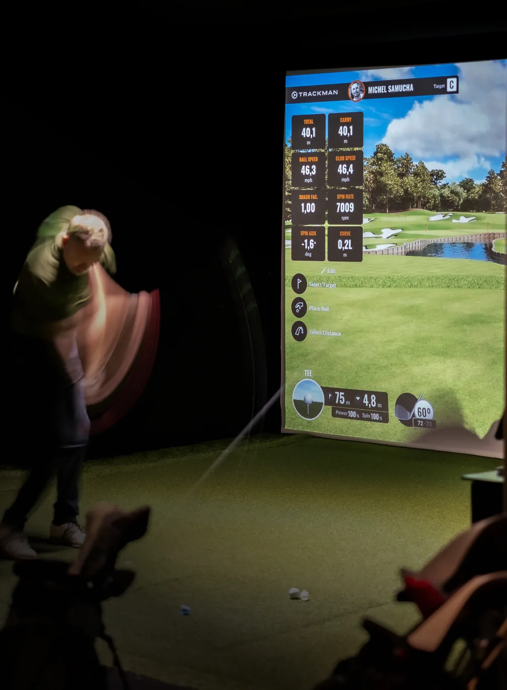
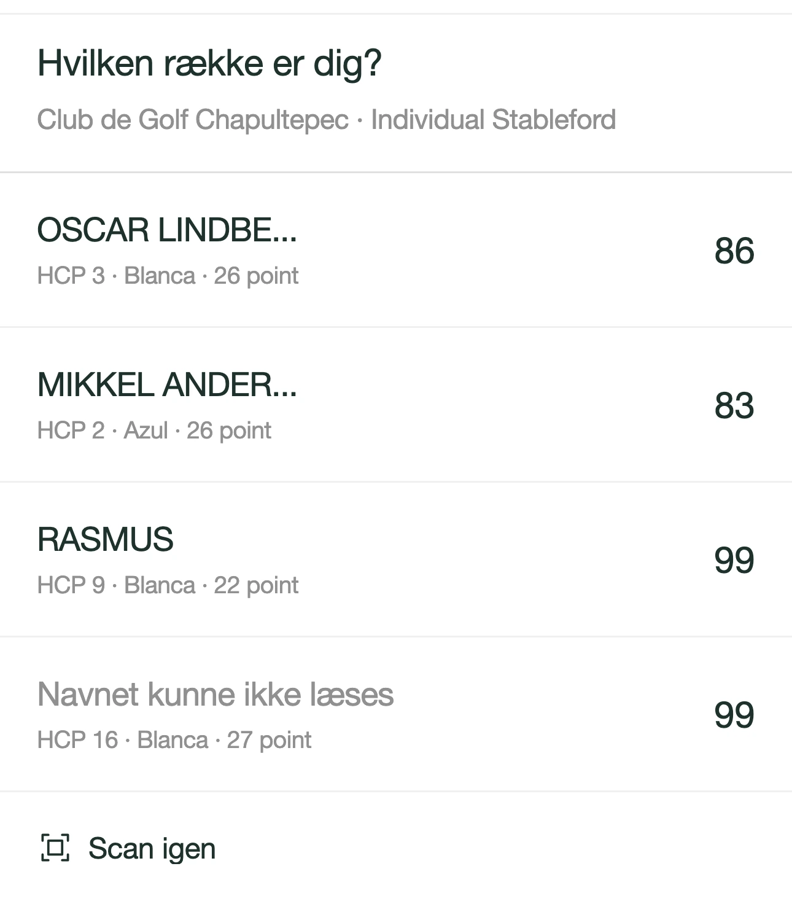
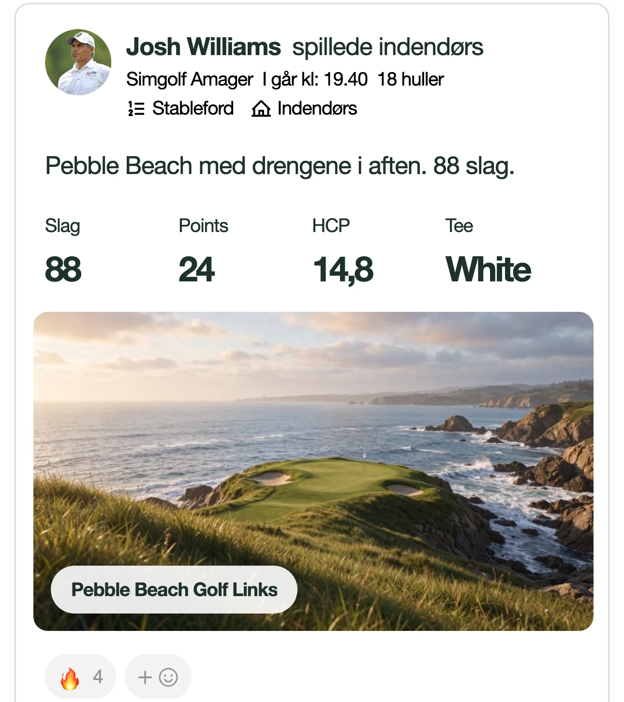
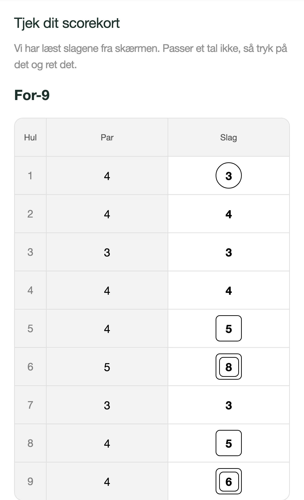
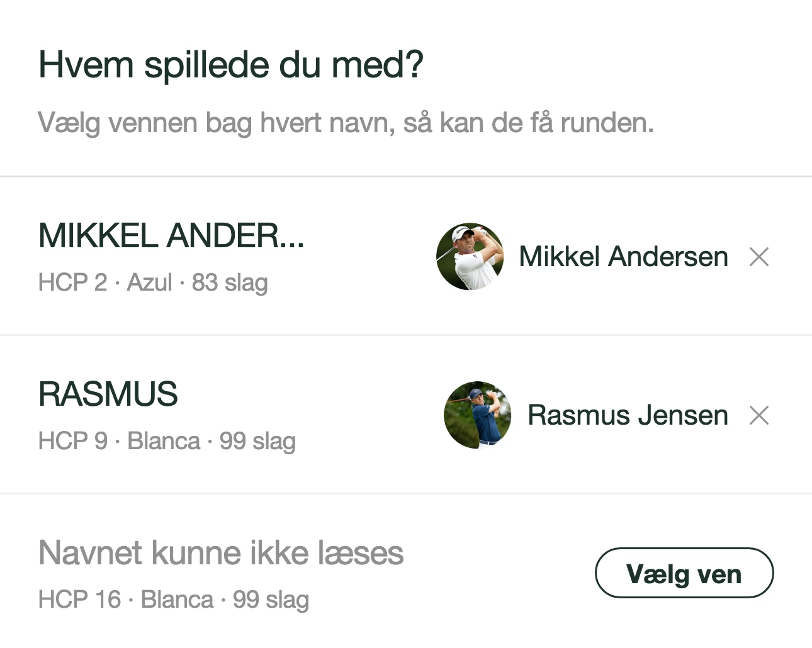
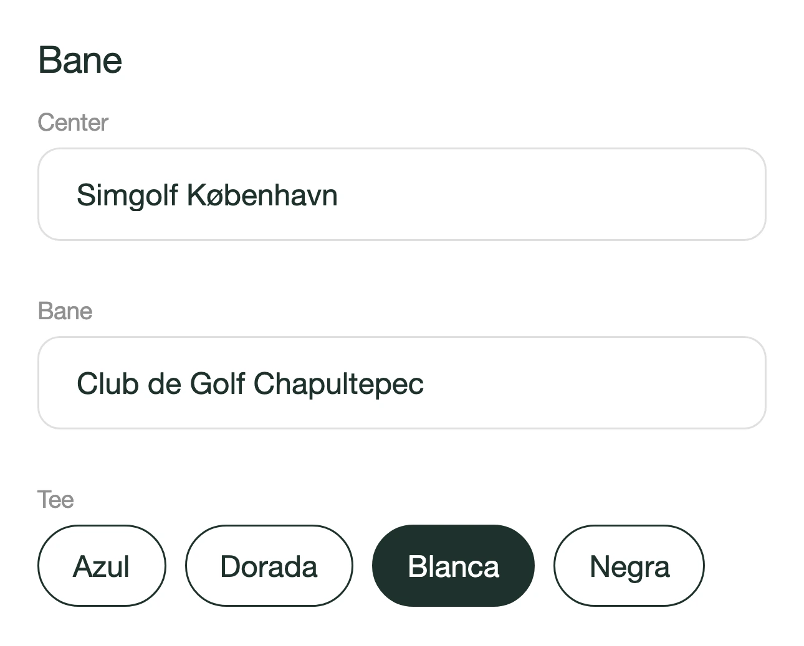
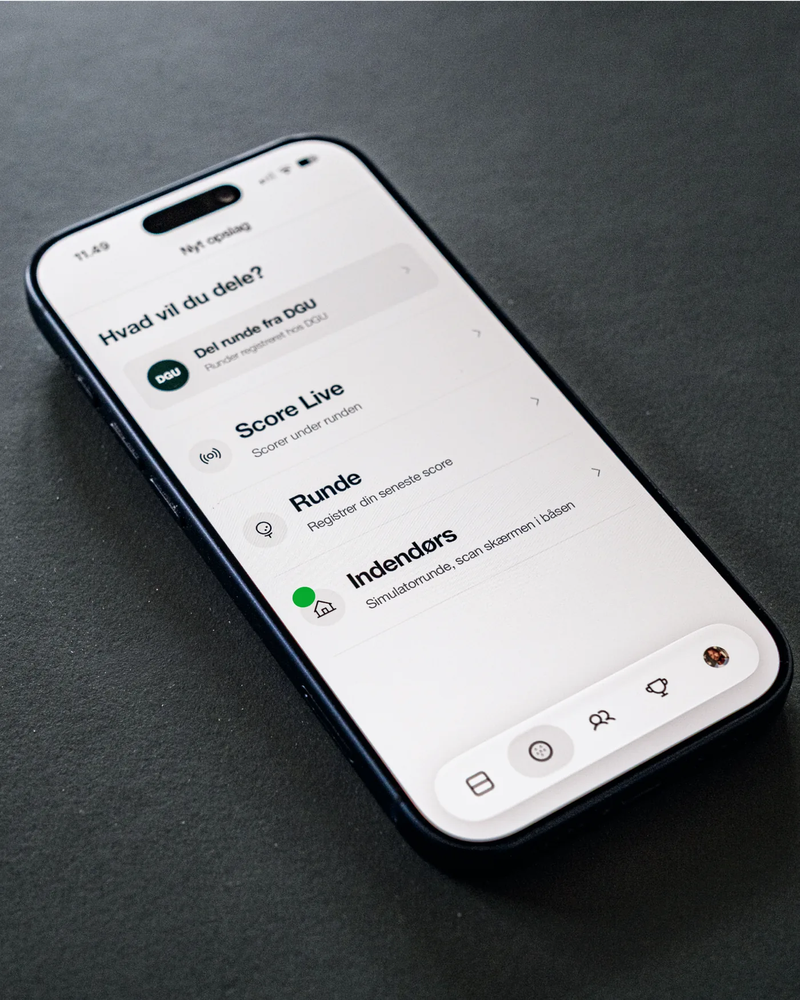

Indendørs runder
Kan jeg logge mine runder fra golfsimulatoren?
Ja. Tag et billede af skærmen, når I har spillet færdig, så læser Golfsocial banen og jeres slag. Runden kommer i feedet, og vennerne fra båsen kan få den med.



Sådan logger du en runde fra simulatoren
Fra skærmen i båsen til runden i feedet.
- Hent Golfsocial i App Store, og opret dig.
- Når I har spillet færdig, så tryk på knappen midt i bunden, og vælg Indendørs.
- Tag et billede af skærmen med scorekortet. Hold telefonen på tværs, og gå tæt på.
- Tryk på din række. Så har appen banen, din tee og dine slag.
- Vælg vennen bag hvert af de andre navne, så får de også runden.
- Tjek tallene, og gem. Runden kommer i feedet.
Vennerne fra båsen får også runden
Ét billede af skærmen er nok til jer alle. Vælg vennen bag hvert navn, så ligger runden klar til dem, og de skal ikke selv tage et billede.


Du taster ikke noget
Banen, din tee og dine slag kommer fra skærmen, og centret vælger du første gang. Passer et tal ikke, trykker du på det og retter det, før du gemmer.

Indendørs runder i Golfsocial
- Sådan
- Et billede af skærmen, når I har spillet færdig
- Appen læser
- Banen, par, din tee og dine slag
- Vennerne
- Kobl navnene på skærmen til dine venner, så får de runden
- I feedet
- Runden står som spillet indendørs, med centret som sted
- Handicap
- Tæller ikke til dit DGU-handicap
- Dine tal
- Holdes ude af din udvikling og dine sammenligninger med vennerne
- Pris
- Gratis

Omkring 600 golfere har logget næsten 800 runder i Golfsocial.
Golfsocial er gratis at spille med vennerne, ude på banen og inde i simulatoren.
Spørgsmål og svar
Kan jeg logge en simulatorrunde i en golf-app?
Ja. I Golfsocial tager du et billede af skærmen i simulatoren, når runden er slut. Appen læser banen og jeres slag, og runden kommer i feedet.
Hvilken golf-app kan gemme runder fra golfsimulatoren?
Golfsocial. Du logger runden med et billede af skærmen, og dine venner kan se den i feedet.
Skal jeg taste scoren ind selv?
Nej. Appen udfylder slagene fra billedet. Passer et tal ikke, trykker du på det og retter det.
Kan mine venner fra båsen få runden?
Ja. Vælg vennen bag hvert navn på skærmen, så ligger runden klar til dem. De skal ikke selv tage et billede.
Hvad hvis mit navn er klippet på skærmen?
Det gør ikke noget. Du trykker selv på din række, og du vælger selv vennen bag de andre navne.
Tæller en indendørs runde til mit DGU-handicap?
Nej. En runde fra simulatoren tæller ikke til dit DGU-handicap, og den skal ikke godkendes af en markør.
Kommer indendørs runder med i min udvikling?
Nej. De står i feedet og på din profil som indendørs, men de holdes ude af din udvikling og dine sammenligninger med vennerne.
Kan vennerne se, hvor vi spillede?
Ja. Centret står som sted, og banen fra simulatoren står på opslaget.
Hvad koster det?
Golfsocial er gratis at spille med vennerne: live score, spilleformerne, grupperne og feedet.
Hvor mange bruger Golfsocial?
Omkring 600 golfere har logget næsten 800 runder i Golfsocial (november 2026).